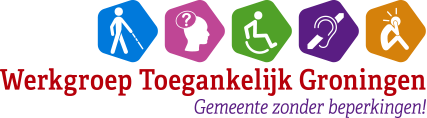

<!doctype html>
<html>
	<head>
		<meta charset="utf-8">
		<meta name="viewport" content="width=device-width, initial-scale=1.0, maximum-scale=1.0, user-scalable=no">

		<title>Toegankelijk Groningen</title>

		<link rel="stylesheet" href="dist/reset.css">
		<link rel="stylesheet" href="dist/reveal.css">
		<link rel="stylesheet" href="dist/theme/toegankelijkGroningen.css" id="theme">

		<!-- Theme used for syntax highlighted code -->
		<link rel="stylesheet" href="plugin/highlight/monokai.css">
	</head>
	<body>
		<div class="reveal">
			<div class="slides">
				<!-- Load your external MarkDown file -->
				<section data-markdown="slides.md"
					data-separator="^\n---\n$"
					data-separator-vertical="^\n--\n$"
					data-charset="iso-8859-15">
				</section>
			</div>
		</div>

		<script src="dist/reveal.js"></script>
		<script src="plugin/notes/notes.js"></script>
		<script src="plugin/markdown/markdown.js"></script>
		<script src="plugin/highlight/highlight.js"></script>
		<script>
			// More info about initialization & config:
			// - https://revealjs.com/initialization/
			// - https://revealjs.com/config/
			Reveal.initialize({
				hash: true,
				slideNumber: true,

				// Learn about plugins: https://revealjs.com/plugins/
				plugins: [ RevealMarkdown, RevealHighlight, RevealNotes ]
			}).then(() => {
				// Voeg logo toe NA Reveal initialisatie
				addLogo();;
			});

			Reveal.configure({ pdfSeparateFragments: false });
			
			function addLogo() {
				// Verwijder eventueel bestaand logo
				const existingLogo = document.querySelector('.toegankelijk-logo');
				if (existingLogo) {
					existingLogo.remove();
				}
				
				// Maak logo container
				const logoContainer = document.createElement('div');
				logoContainer.className = 'toegankelijk-logo';
				
				// Debug: voeg een kleur toe om te zien of het werkt
				//logoContainer.style.border = '2px solid blue';
				//logoContainer.style.backgroundColor = 'rgba(255,255,255,0.9)';
				
				// Het pad naar je logo
				logoContainer.innerHTML = `
					
				`;
				
				// Voeg logo toe aan de reveal container
				const revealContainer = document.querySelector('.reveal');
				if (revealContainer) {
					revealContainer.appendChild(logoContainer);
					console.log('Logo toegevoegd aan presentatie');
				} else {
					console.error('Reveal container niet gevonden');
					// Probeer het opnieuw na een korte vertraging
					setTimeout(addLogo, 1000);
				}
			}
			
			// Backup: probeer het ook na volledige paginalading
			window.addEventListener('load', function() {
				setTimeout(addLogo, 1000);
			});		</script>
	</body>
</html>

Reveal.configure({ pdfSeparateFragments: false });
